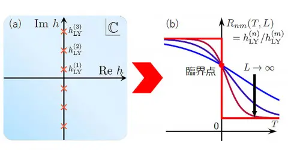

Latest research news
Bilayer structure
Open-sharp radiation speeding
High charge carrier mobility (
L
p
= 10 cm
3
/V + σ
)
2025年05月02日
双性イオン・開発型ナノグラフェンー電子輸送性や電荷分離・磁性などさまざまな機能が協奏したナノグラフェンー©
2025年05月02日
多様な系に現れる臨界点の性質を系統的に決定する新手法を開発－リーヤンゼロを用いた一般的手法－
2025年05月02日
DNA塩基が見せた一瞬のねじれをとらえた－光損傷の仕組み解明の手掛かりに－
2025年05月02日
アカゲザル全800組織の季節の逆伝子発現地図を作製－生産機能や病気リスクが季節や性別によって変わる謎に迫る－
最新の研究成果一覧を見る